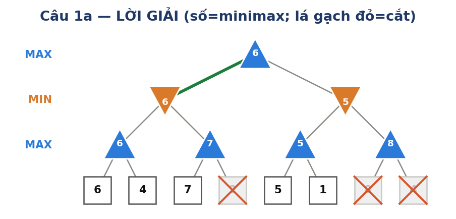
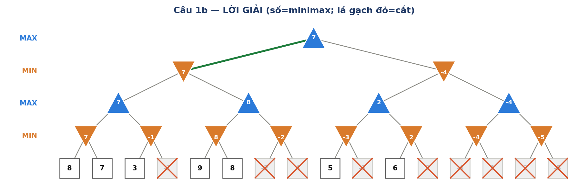
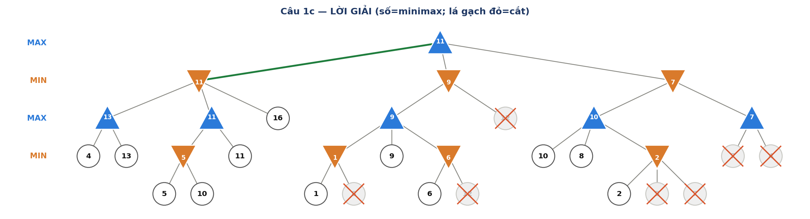
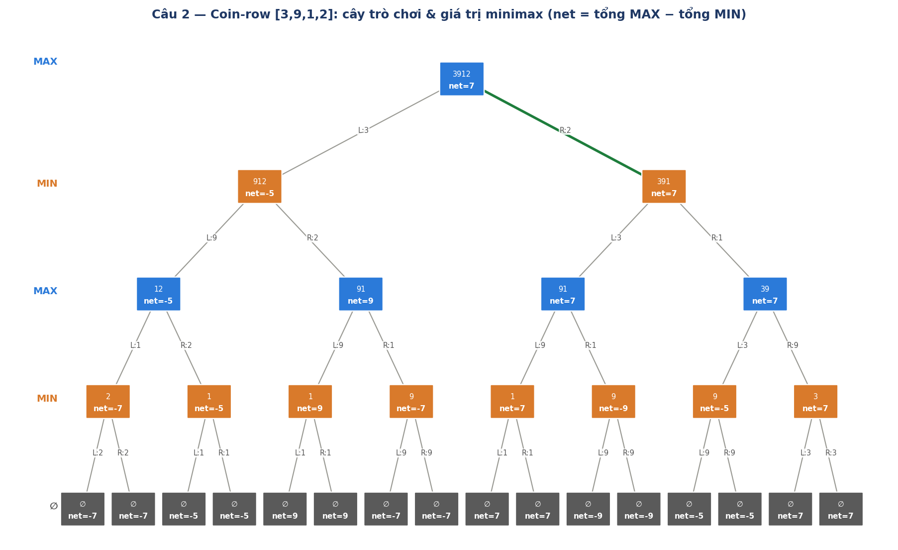
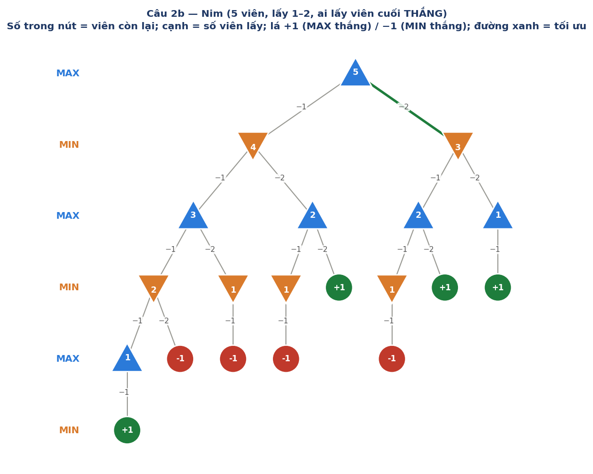
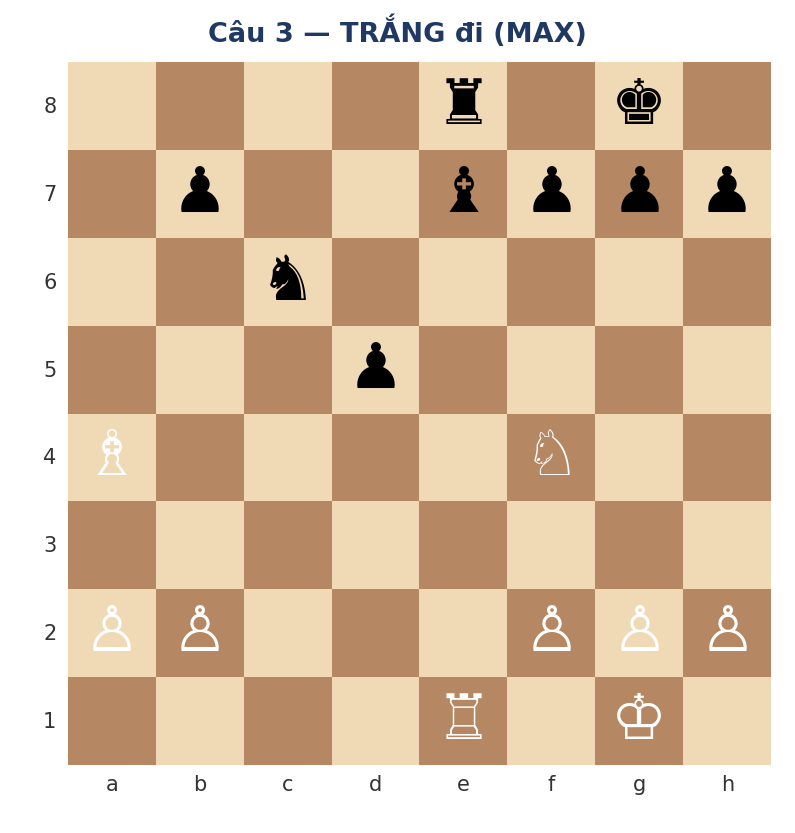
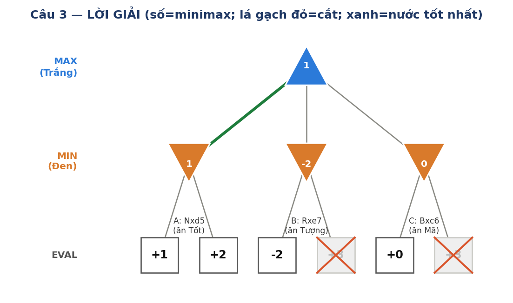
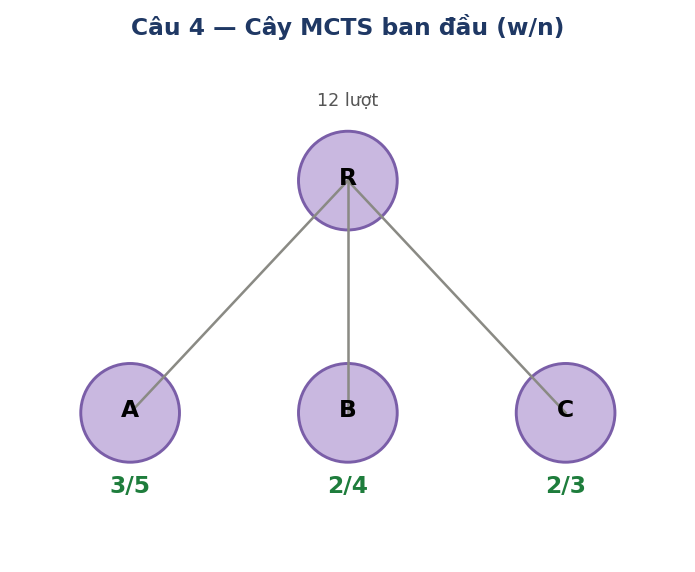
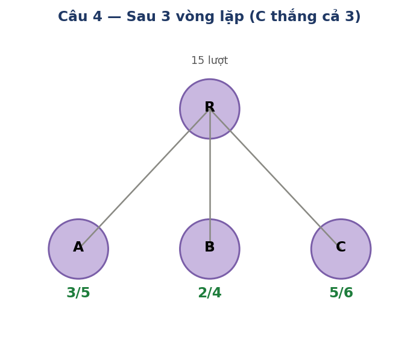

- Nút ▲ MAX lấy max các con; nút ▼ MIN lấy min các con. Giá trị ở lá là điểm cho MAX.
- Alpha-Beta duyệt trái → phải; cắt khi α ≥ β.
- Luật vàng: "MAX nuôi α, MIN nuôi β."
— Khi MAX tìm được con có giá trị lớn → cập nhật α (cận dưới cho MAX).
— Khi MIN tìm được con có giá trị nhỏ → cập nhật β (cận trên cho MIN).
— v cùng loại với nút: MAX khởi tạo v = −∞ (lấy max), MIN khởi tạo v = +∞ (lấy min). - Điều kiện cắt: Tại nút MIN: nếu v ≤ α → cắt (MAX cha đã có lựa chọn tốt hơn). Tại nút MAX: nếu v ≥ β → cắt (MIN cha đã có lựa chọn tốt hơn).
Mỗi nút ghi: tên (loại) vào với α, β kế thừa từ cha. Duyệt từng con trái→phải, cập nhật v (giá trị tạm). Khi v vi phạm điều kiện cắt → CẮT các con còn lại. Cuối cùng trả v về cho cha.
Ý tưởng: Tính giá trị từ lá lên gốc. Mỗi nút MAX lấy max các con, MIN lấy min các con.
- D = max(6, 4) = 6 ← lấy con lớn hơn
- E = max(7, 2) = 7
- F = max(5, 1) = 5
- G = max(8, 4) = 8
- B = min(D=6, E=7) = 6 ← MIN chọn nhỏ hơn để hạn chế MAX
- C = min(F=5, G=8) = 5
- A (gốc) = max(B=6, C=5) = 6
- → MAX chọn nhánh trái (B) vì B=6 > C=5.
Ý tưởng: Duyệt như Minimax nhưng "nhìn trước" — nếu biết chắc một nhánh không thể tốt hơn nhánh đã tìm, ta bỏ qua (cắt) nhánh đó.
• Xét lá 6: v = max(−∞, 6) = 6 → α = 6.
• Xét lá 4: v = max(6, 4) = 6. Không thay đổi.
→ D = 6. Trả về B.
Ý nghĩa: B biết rằng kết quả tốt nhất mà B có thể "ép" MAX xuống là ≤ 6.
• Xét lá 7: v = max(−∞, 7) = 7, α = 7.
• Kiểm tra: v=7 ≥ β=6 → CẮT!
Lý do: E (MAX) đã đạt 7. Nhưng B (MIN cha) đã có lựa chọn D=6 nhỏ hơn. B sẽ không bao giờ chọn E (vì E ≥ 7 > 6). Vậy không cần xét lá 2 nữa.
→ E = 7 (nhưng B không dùng). Lá 2 bị cắt.
Ý nghĩa: A biết rằng mình đã có ít nhất 6 (từ nhánh B). Nhánh C phải ≥ 6 mới đáng xét.
• Xét lá 5: v = max(−∞, 5) = 5. α giữ 6 (vì 5 < 6).
• Xét lá 1: v = max(5, 1) = 5. Không đổi.
→ F = 5. Trả về C.
• Kiểm tra: v=5 ≤ α=6 → CẮT!
Lý do: C (MIN) đã tìm được 5. Nhưng A (MAX cha) đã có B=6 > 5. A sẽ không chọn C. Vậy không cần xét G (lá 8, 4) nữa.
→ C = 5. Cả nút G (lá 8, 4) bị cắt.

Cây 4 tầng có cấu trúc: Gốc R (MAX) → N1, N2 (MIN) → P, Q, S, T (MAX) → p1, p2, q1, q2, s1, s2, t1, t2 (MIN) → 16 lá.
- p1 = min(8, 7) = 7
- p2 = min(3, −1) = −1
- q1 = min(9, 8) = 8
- q2 = min(−2, 4) = −2
- s1 = min(5, −3) = −3
- s2 = min(6, 2) = 2
- t1 = min(−4, 1) = −4
- t2 = min(2, −5) = −5
- P = max(7, −1) = 7
- Q = max(8, −2) = 8
- S = max(−3, 2) = 2
- T = max(−4, −5) = −4
- N1 = min(7, 8) = 7
- N2 = min(2, −4) = −4
- R = max(7, −4) = 7 → chọn nhánh trái N1.
Lá 3 → v = 3. Kiểm tra: v=3 ≤ α=7 → CẮT lá −1!
Lý do: p2 (MIN) đã xuống 3, mà P (MAX) đã có p1=7. P sẽ chọn p1, nên p2 không cần xét thêm.
p2 = 3.
Lý do: Q (MAX) đã đạt 8. Nhưng N1 (MIN) có P=7, sẽ không chọn Q (vì Q ≥ 8 > 7). Nên bỏ qua q2.
Q = 8.
s1 đã cho 5 ≤ 7 = α. S (MAX cha) đang kế thừa α=7 từ ông, nên S cần ≥ 7. Mà s1 chỉ cho 5 → S lấy max vẫn chưa đủ, nhưng s1 có thể còn giảm. MIN cắt là đúng.
s1 = 5.
s2 = 6.
N2 (MIN) đã có 6, mà R (MAX) có N1=7 > 6. R sẽ không chọn N2. Bỏ toàn bộ T.
N2 = 6 (chỉ là cận, thực tế ≤ 6).
→ Chỉ xét 7/16 lá (tiết kiệm hơn 56%!).

- L1 = max(4, 13) = 13
- L2a = min(5, 10) = 5 → L2 = max(5, 11) = 11
- Lá trực tiếp = 16
- L = min(13, 11, 16) = 11
- M1a = min(1, 8) = 1; M1b = min(6, 12) = 6 → M1 = max(1, 9, 6) = 9
- Lá trực tiếp = 12
- M = min(9, 12) = 9
- R1c = min(2, 5, 7) = 2 → R1 = max(10, 8, 2) = 10
- R2 = max(7, 4) = 7
- R = min(10, 7) = 7
Gốc = max(L=11, M=9, R=7) = 11 → chọn nhánh trái (L).
Nhánh trái cho α=11 rất sớm → cắt mạnh ở nhánh giữa và phải.
L1=max(4,13)=13 → β=13. L2: L2a=min(5,10)=5 → L2=max(5,11)=11 → β=11. Lá 16 → v=min(11,16)=11. L=11. → gốc α=11.
M1: M1a xét lá 1 → v=1 ≤ α=11 → CẮT lá 8. Xét lá 9. M1b xét lá 6 ≤ α=11 → CẮT lá 12. M1=max(1,9,6)=9.
Về M: v=9 ≤ α=11 → CẮT lá 12 (con thứ hai của M). M=9.
R1: lá 10, lá 8, R1c xét lá 2 ≤ α=11 → CẮT lá 5, 7. R1=max(10,8,2)=10.
Về R: v=10 ≤ α=11 → CẮT cả nút R2 (lá 7, 4). R=10.
Gốc = max(11, 9, 10) = 11.
→ Chỉ xét 12/19 lá.
Nhờ nhánh trái cho ngay giá trị cao (α=11) sớm, toàn bộ nhánh giữa và phải bị cắt rất mạnh. Đây chính là minh họa lợi ích của việc gặp nước tốt sớm — move ordering càng tốt, alpha-beta càng hiệu quả.

- Cắt nhiều nhất: Ở mỗi nút, xét nước tốt nhất trước — MIN xét con nhỏ trước; MAX xét con lớn trước. Điều này làm α/β chặt sớm → cắt nhiều → O(bd/2). Ý nghĩa: nhìn xa gấp đôi so với cây không cắt, cùng chi phí!
- Cắt ít nhất: Xét nước tệ nhất trước → α/β mở rộng rất chậm → gần như không cắt → O(bd), bằng Minimax thuần.
Giá trị gốc không đổi bất kể thứ tự duyệt — Alpha-Beta cho cùng kết quả với Minimax. Thứ tự chỉ ảnh hưởng tốc độ, không ảnh hưởng đáp số. Đây là lý do các engine cờ đầu tư lớn vào move ordering (killer heuristic, history heuristic, transposition table).
| Thành phần | Mô tả |
|---|---|
| S₀ (trạng thái đầu) | Dãy [3, 9, 1, 2], lượt MAX, tổng hai bên = 0. |
| PLAYER(s) | MAX và MIN luân phiên. MAX đi trước. |
| ACTIONS(s) | {lấy trái, lấy phải} — 2 lựa chọn mỗi lượt (miễn dãy chưa rỗng). |
| RESULT(s, a) | Bỏ xu ở đầu tương ứng; cộng mệnh giá vào tổng người vừa đi; đổi lượt. |
| TERMINAL-TEST(s) | True khi dãy rỗng (hết xu). |
| UTILITY(s) | (tổng MAX) − (tổng MIN). Dương = MAX thắng. |
Từ [3, 9, 1, 2], MAX có 2 nước: lấy trái (3) hoặc phải (2). Vẽ toàn bộ cây đến lá, tính UTILITY = (tổng MAX) − (tổng MIN), rồi lan ngược từ dưới lên.
- Lấy phải (xu 2): → dãy [3,9,1] → đối phương bắt buộc phải xử lý [3,9,1]. Phân tích đến cuối → net = +7 (MAX: 2+9 = 11, MIN: 3+1 = 4).
- Lấy trái (xu 3): → dãy [9,1,2] → net = −5 (MAX thua).
Gốc = max(+7, −5) = +7. Nước đầu tối ưu: lấy xu PHẢI (giá 2).
Tham lam so sánh hai đầu: 3 và 2. Vì 3 > 2, tham lam chọn lấy trái (3).
Kết quả: net = −5 → MAX thua thảm!
Tham lam chỉ nhìn 1 bước — "lấy xu lớn hơn ngay bây giờ." Nhưng Minimax nhìn đến cuối ván và phát hiện: nếu lấy xu nhỏ (2) ở bước đầu, MAX "ép" đối thủ vào thế xấu, từ đó MAX luôn vớt được xu 9 (xu có giá trị lớn nhất). Chiến lược tối ưu đôi khi phải "hy sinh ngắn hạn để thắng dài hạn."

| Thành phần | Mô tả |
|---|---|
| S₀ | 5 viên sỏi, lượt MAX. |
| PLAYER(s) | MAX / MIN luân phiên. |
| ACTIONS(s) | {lấy 1, lấy 2} (nếu đủ viên). |
| RESULT(s, a) | Trừ số viên; đổi lượt. |
| TERMINAL-TEST(s) | Còn 0 viên. |
| UTILITY | +1 nếu người vừa lấy viên cuối là MAX. −1 nếu là MIN. |
Gốc = +1 → người đi trước (MAX) THẮNG nếu chơi tối ưu.
Chiến lược tối ưu dựa trên quy tắc: "vị trí bội của 3 = thế thua cho người sắp đi."
- MAX lấy 2 viên → còn 3 viên (bội của 3 — thế thua cho MIN!)
- Nếu MIN lấy 1 → còn 2 → MAX lấy 2 → MAX thắng ✓
- Nếu MIN lấy 2 → còn 1 → MAX lấy 1 → MAX thắng ✓
Dù MIN đi gì, MAX luôn thắng!
Nếu MAX lấy 1 → còn 4 → MIN lấy 1 → còn 3 (bội của 3 — thế thua cho MAX!). Bây giờ MAX ở thế thua: lấy 1 (còn 2, MIN lấy 2 thắng) hoặc lấy 2 (còn 1, MIN lấy 1 thắng). Kết quả: MAX thua (−1).

Bội của 3 = thua. Chiến lược: luôn để lại cho đối thủ một bội số của 3. Từ 5 viên: 5 − 2 = 3 ✓. Từ 3, đối thủ để lại 2 hoặc 1, ta lấy hết. Tổng quát hơn, với Nim "lấy 1 đến k": bội của (k+1) = thế thua.

Cây: Gốc (MAX / Trắng) → 3 nước (A, B, C) → mỗi nước có 2 đáp trả của Đen (MIN) → 6 lá EVAL.
- A (Nxd5) = min(+1, +2) = +1 ← Đen chọn kịch bản xấu nhất cho Trắng (EVAL=+1)
- B (Rxe7) = min(−2, +3) = −2 ← Đen ăn lại → Trắng mất chất
- C (Bxc6) = min(0, +3) = 0 ← Đen ăn lại → đổi ngang
Gốc = max(+1, −2, 0) = +1 → Trắng đi Nxd5.
• Lá +1 → v = min(+∞, 1) = 1, β = 1.
• Lá +2 → v = min(1, 2) = 1. Không đổi.
→ A = +1.
• Lá −2 → v = min(+∞, −2) = −2. Kiểm tra: v=−2 ≤ α=1 → CẮT lá +3!
B (MIN) đã xuống −2. Gốc (MAX) đã có A=+1 > −2, nên không bao giờ chọn B. Bỏ lá +3.
→ B = −2.
• Lá 0 → v = min(+∞, 0) = 0. Kiểm tra: v=0 ≤ α=1 → CẮT lá +3!
Tương tự: C cho 0, gốc đã có 1. Không chọn C.
→ C = 0.

| Nước | Diễn biến | Kết quả |
|---|---|---|
| Nxd5 (tối ưu) | Mã ăn Tốt d5. Mã an toàn — Đen không thể ăn lại. | Thắng Tốt sạch (+1). Lợi chất rõ ràng, không rủi ro. |
| Rxe7 | Xe ăn Tượng e7. Nhưng Đen có Xe đáp lại (…Rxe7). | Đổi Xe (5) lấy Tượng (3) = mất chất (−2). Thiệt thòi! |
| Bxc6 | Tượng ăn Mã c6. Nhưng Đen có Tốt ăn lại (…bxc6). | Đổi Tượng (3) lấy Mã (3) = đổi ngang (0). Không lợi. |
Đây chính là cách hàm EVAL (đếm chất) giúp máy chọn nước: so sánh material balance (chênh lệch chất) sau mỗi chuỗi ăn/ăn-lại. Nxd5 "ăn sạch" (đối phương không đáp trả được), trong khi Rxe7 và Bxc6 đều bị ăn lại với kết quả bất lợi hoặc huề.
Cây cờ vua có ~35 nước hợp lệ mỗi lượt, ván trung bình ~80 nước (40 mỗi bên) → cây có ~ 3580 ≈ 10123 nút — lớn hơn số nguyên tử trong vũ trụ! Không thể duyệt hết.
Giải pháp: dừng ở độ sâu giới hạn (cutoff) rồi dùng hàm đánh giá EVAL thay cho UTILITY.
- EVAL chỉ đếm chênh lệch chất lượng quân — không thấy yếu tố thế trận (vua bị lộ, kiểm soát trung tâm, cấu trúc tốt, v.v.).
- Vì vậy nước chọn không đảm bảo tối ưu tuyệt đối. Chất lượng phụ thuộc: EVAL tốt tới đâu + tìm sâu tới đâu.
- Trong thực tế, engine mạnh dùng EVAL = tổ hợp tuyến tính có trọng số của nhiều đặc trưng (chất, thế, vua safety, hoạt tính quân…), không chỉ đếm chất (xem slide 19).
UTILITY(thua) ≤ EVAL(s) ≤ UTILITY(thắng)
Ý nghĩa: EVAL phải nằm trong khoảng [−∞ (thua), +∞ (thắng)] sao cho trạng thái chiếu bí thật luôn có giá trị cực trị hơn mọi ước lượng material. Nhờ vậy, nếu thuật toán tìm được đường chiếu bí, nó sẽ luôn ưu tiên chiếu bí hơn bất kỳ lợi thế chất nào.
Công thức: UCB(nút) = w/n + √2 · √(ln N / n).
Hằng số: ln 12 ≈ 2.485, ln 13 ≈ 2.565, ln 14 ≈ 2.639.

Selection — tính UCB:
| Nút | w/n | Exploration √2·√(ln 12 / n) | UCB |
|---|---|---|---|
| A | 3/5 = 0.600 | √2 · √(2.485/5) = 1.414 · 0.705 = 0.997 | 1.597 |
| B | 2/4 = 0.500 | √2 · √(2.485/4) = 1.414 · 0.788 = 1.115 | 1.615 |
| C | 2/3 = 0.667 | √2 · √(2.485/3) = 1.414 · 0.910 = 1.287 | 1.954 ← MAX |
Chọn C (UCB cao nhất). Simulation → THẮNG.
Back-propagation: C: 2/3 → 3/4. Gốc: N = 12 → 13.
C có tỉ lệ thắng cao nhất (0.667) VÀ ít lượt nhất (n=3), nên cả phần exploitation lẫn exploration đều ưu ái C. Công thức UCB tự động cân bằng hai yếu tố này.
Selection — tính UCB:
| Nút | w/n | Exploration | UCB |
|---|---|---|---|
| A | 3/5 = 0.600 | √2 · √(2.565/5) = 1.014 | 1.613 |
| B | 2/4 = 0.500 | √2 · √(2.565/4) = 1.133 | 1.632 |
| C | 3/4 = 0.750 | √2 · √(2.565/4) = 1.133 | 1.882 ← MAX |
Chọn C lần nữa. Simulation → THẮNG.
Back-propagation: C: 3/4 → 4/5. N = 13 → 14.
Selection — tính UCB:
| Nút | w/n | Exploration | UCB |
|---|---|---|---|
| A | 3/5 = 0.600 | √2 · √(2.639/5) = 1.028 | 1.627 |
| B | 2/4 = 0.500 | √2 · √(2.639/4) = 1.149 | 1.649 |
| C | 4/5 = 0.800 | √2 · √(2.639/5) = 1.028 | 1.827 ← MAX |
Chọn C. Simulation → THẮNG.
Back-propagation: C: 4/5 → 5/6. N = 14 → 15.
A = 3/5 · B = 2/4 · C = 5/6

Chọn nút nhiều lượt nhất (most visited) → C (6 lượt).
Nút có nhiều lượt nhất là nút được kiểm chứng kỹ nhất — giá trị của nó đáng tin nhất. Tỉ lệ thắng có thể cao do chỉ được thử 1–2 lần (may mắn), nhưng số lượt phản ánh mức độ tin tưởng thống kê. Trong thực tế, AlphaGo và các engine MCTS hiện đại đều dùng tiêu chí "most visited."
Nếu vòng 1 C thua: C → 2/4 (thay vì 3/4), N = 13.
| Nút | w/n | Exploration | UCB |
|---|---|---|---|
| A | 3/5 = 0.600 | √2 · √(2.565/5) = 1.014 | 1.613 |
| B | 2/4 = 0.500 | √2 · √(2.565/4) = 1.133 | 1.632 |
| C | 2/4 = 0.500 | √2 · √(2.565/4) = 1.133 | 1.632 |
B và C đều = 1.632 > A (1.613). Phá hòa bằng thứ tự chữ cái → chọn B.
Sau khi C thất bại, tỉ lệ thắng của C giảm xuống bằng B (cả hai = 0.5). Thuật toán không bám mãi C mà chuyển sang thử nút khác (B) — đây chính là cơ chế exploration (khám phá) của UCB. Nếu chỉ dùng exploitation (w/n), ta sẽ bám C mãi dù C bắt đầu thua.
| Số hạng | Công thức | Vai trò |
|---|---|---|
| Khai thác (Exploitation) |
w/n |
Tỉ lệ thắng — ưu tiên nút đang cho kết quả tốt. Giống như bạn tiếp tục ăn ở nhà hàng mà bạn đã thích. |
| Khám phá (Exploration) |
C·√(ln N / n) |
Thưởng cho nút ít được thử (n nhỏ → exploration lớn). Giống như bạn thử nhà hàng mới vì "biết đâu ngon hơn." |
Đây chính là bài toán cổ điển multi-armed bandit. UCB tự động cân bằng:
- Nút đang thắng nhiều (w/n cao) → được chọn nhiều hơn → khai thác kết quả tốt.
- Nút ít được thử (n nhỏ) → exploration bonus lớn → đảm bảo không bỏ sót nút tiềm năng.
- Hằng số C điều chỉnh mức thiên về khám phá. C lớn → khám phá nhiều hơn; C nhỏ → khai thác nhiều hơn.
Kết hợp cả hai giúp MCTS tập trung vào nút tốt nhưng vẫn thỉnh thoảng thử hướng mới — giống cách con người ra quyết định trong điều kiện không chắc chắn.
| Câu | Kết quả chính |
|---|---|
| 1a | Gốc = 6; MAX chọn nhánh trái (B); cắt 3 lá (2, 8, 4) → xét 5/8 lá. |
| 1b | Gốc = 7; MAX chọn nhánh trái (N1); cắt 9/16 lá → xét 7/16 lá. |
| 1c | Gốc = 11; MAX chọn nhánh trái (L); cắt 7/19 lá → xét 12/19 lá. |
| 1d ★ | Tốt nhất trước → O(bd/2); tệ nhất trước → O(bd). Giá trị gốc không đổi. |
| 2a | net = +7; lấy xu phải (2). Tham lam (lấy 3) → −5, thua. |
| 2b | Gốc = +1; MAX thắng bằng lấy 2 viên (để lại 3 — bội của 3 = thua cho đối thủ). |
| 3 | Gốc = +1; Trắng đi Nxd5 (ăn Tốt sạch); cắt 2 lá. Rxe7 mất chất (−2), Bxc6 đổi ngang (0). |
| 4 | Chọn C cả 3 vòng → C = 5/6; nước đi = C (most visited). Nếu C thua vòng 1 → vòng 2 chọn B (exploration). |
- Minimax: Tính từ lá lên gốc. MAX lấy max, MIN lấy min. Đơn giản nhưng duyệt toàn bộ cây.
- Alpha-Beta: Duyệt trái→phải, duy trì cửa sổ [α, β]. MAX nuôi α (cận dưới), MIN nuôi β (cận trên). Cắt khi α ≥ β. Kết quả giống Minimax nhưng nhanh hơn.
- Heuristic Alpha-Beta: Dừng sớm (cutoff), dùng EVAL thay UTILITY. Ước lượng — không đảm bảo tối ưu tuyệt đối.
- MCTS: Không cần EVAL. Dùng UCB (exploitation + exploration) để chọn nút, chạy playout ngẫu nhiên, cập nhật thống kê. Chọn nước "most visited" cuối cùng.